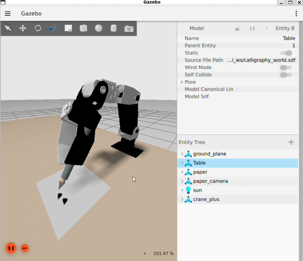
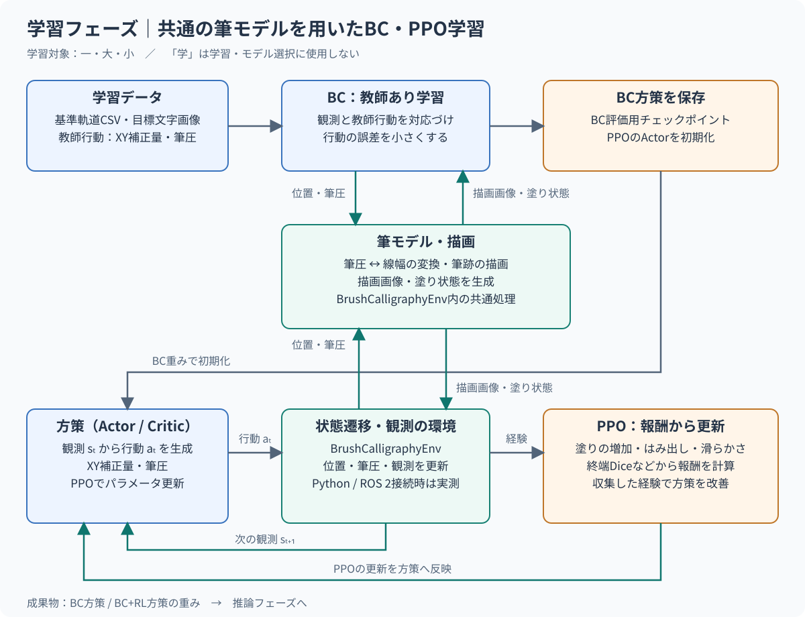
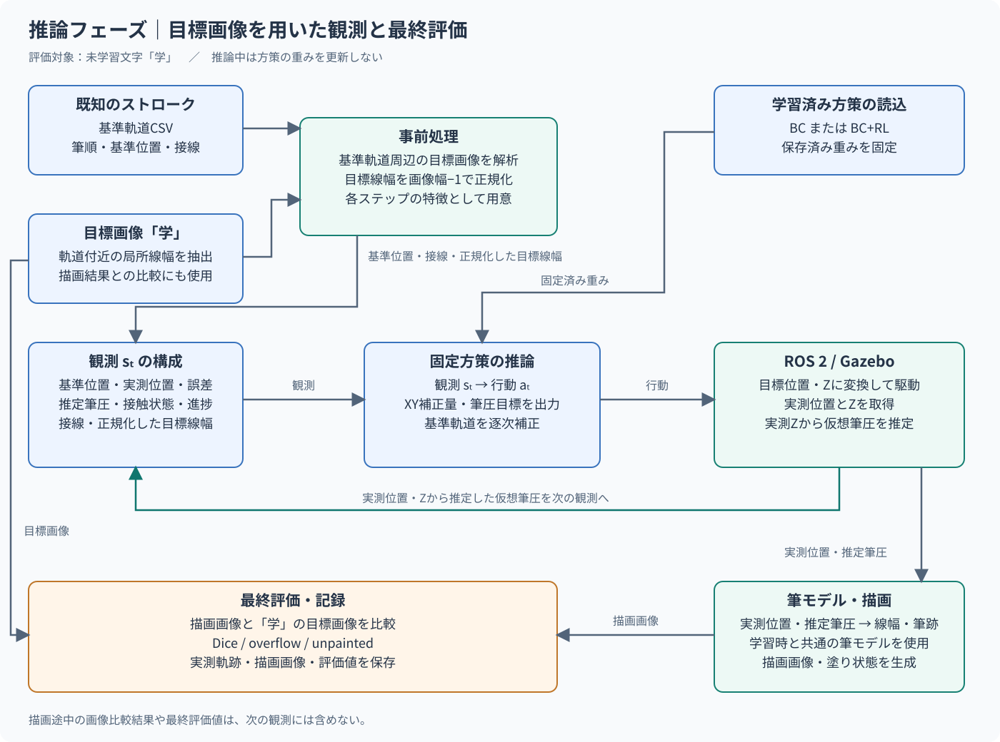
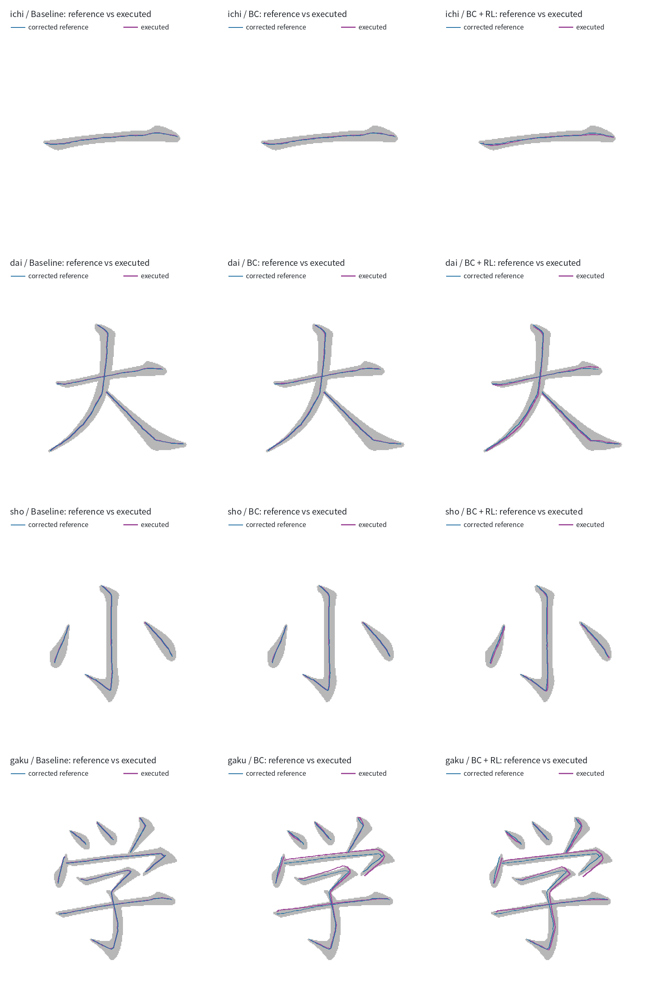
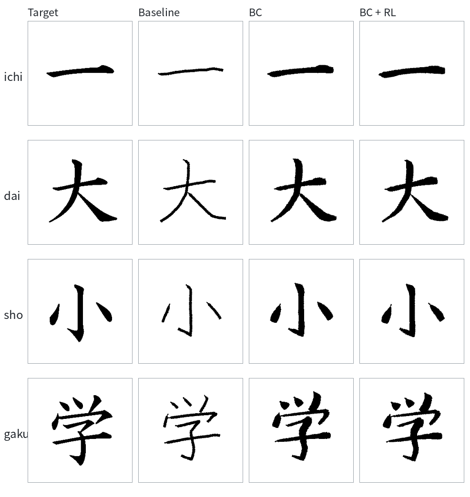
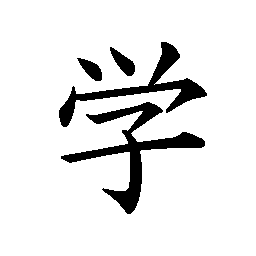
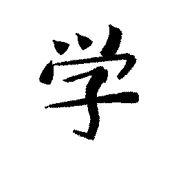
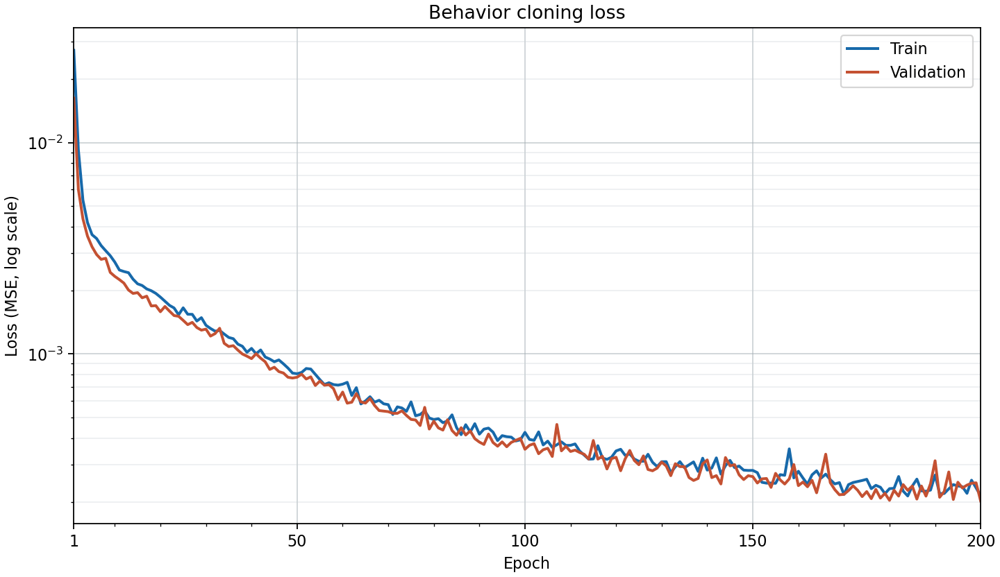
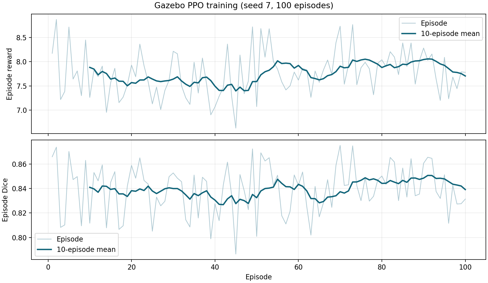
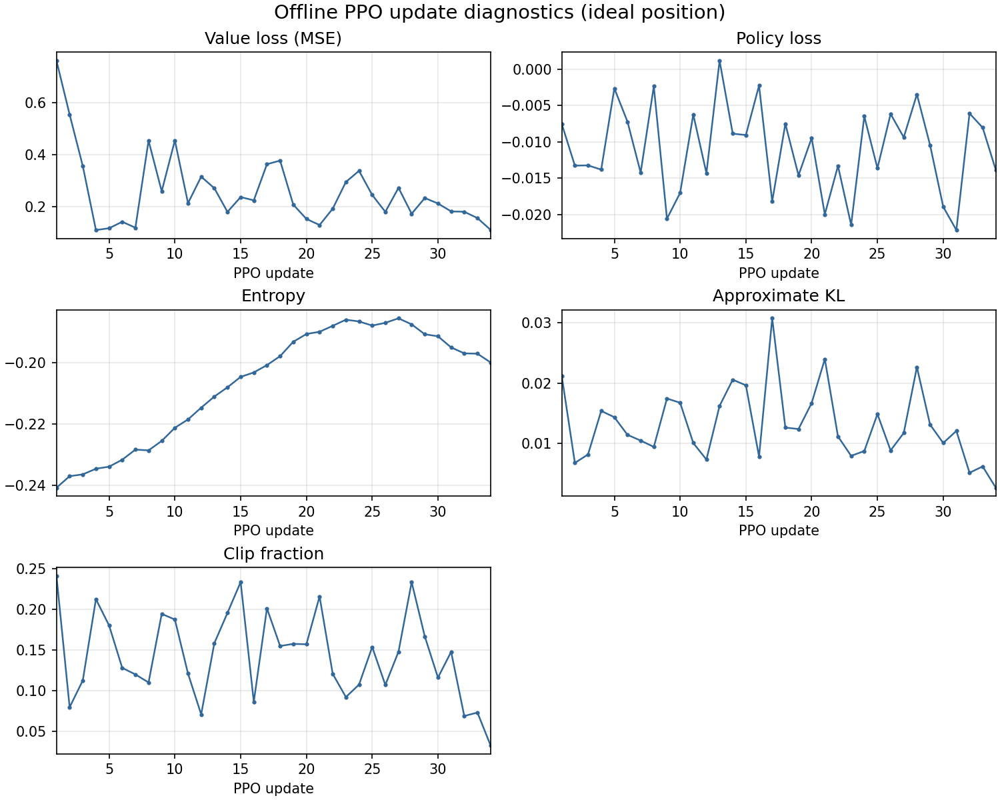

ROS 2 / Gazebo を活用した 模倣学習 + 強化学習による仮想書道システムの開発と評価
ロボット学習課題の題材として「ロボットアームによる習字」を選んだ。 単なるティーチング制御ではないAIらしさを検証するため、学習時とは異なる未知の文字を書かせて、毛筆体風になるかどうかを最終目標とした。 具体的には粗いXY骨格軌道とお手本の毛筆画像のみから、筆先のXY補正量とZ方向の沈み込み量を学習によって獲得する。 学習の教師に使用する文字は、筆はこびの基本要素「とめ」「はらい」「はね」を含む「一」「大」「小」とし、未学習の文字「学」を推論で描くことをゴールとする。
方針は BC（Behavioral Cloning）で初期方策を作り、RL（強化学習）で画像一致度を改善し、ROS 2/Gazebo 上で実行可能な閉ループ制御へ落とし込む、である。
環境構築には手間をかけずに、講座で使用した環境をそのまま利用した。実装にはAIコーディングエージェント(GitHub Copilot)を併用した。

| 段階 | 内容 |
|---|---|
| 1. データ準備 | 筆順CSVと毛筆体画像から、各文字ごとの教師情報（軌道、軌道中の目標線幅）を作成。 |
| 2. BC学習 | 一・大・小の共通方策を学習し、初期制御を生成。 |
| 3. RL改善 | BC重みを初期値として、画像一致度と描画補正を最適化。（ROS 2 / MoveIt / Gazebo 使用） |
| 4. デプロイ・検証 | 学習文字（一・大・小）と未学習文字（学）について、Baseline・BC・BC+RLをGazeboで再生し実測評価。 |
各ステップで目標画像との一致度評価を行う。新たに塗った画素が目標画像と重なれば加点し、目標の外へはみ出せば減点する。加えて、行動の大きさと直前の行動からの変化にペナルティを設け、過大な補正や急な変化を抑える。
報酬 = 5 × 目標内の新規塗り − 5 × 目標外の新規塗り − 0.02 × 行動の二乗平均 − 0.02 × 行動変化の二乗平均
新規塗りの画素数は目標の画素数で正規化し、筆画の始点・終点とそれ以外に設定した重みを掛ける。全軌道を正常に描き終えたときは、完成画像のDice係数の2倍を追加する。Diceは目標画像からのはみ出しと塗り不足を評価した一致度を示す。（1.0＝完全一致） 動作失敗時はそのステップの報酬を−1として終了し、完成時のDice報酬は加えない。報酬計算には学習文字「一・大・小」の目標画像を使う。

BCでは教師行動にノイズを加えて環境に渡し、次の観測と教師行動を学習データとして収集する。筆モデルによる描画画像・指標は評価に使い、教師行動との誤差で方策を学習する。その重みでPPOを初期化する。BCとPPOの環境はいずれも位置・筆圧を共通の筆モデルへ渡し、描画画像・塗り状態を得る。描画環境から得た観測と報酬で方策を更新し、BC / BC+RLの重みを保存する。
PPOではMoveItの逆運動学（IK）により、方策が出したXY補正と筆圧目標から作る筆先の目標XYZを、アームの目標関節角に変換する。controllerがその関節軌道を実行した後、/joint_statesで得た実測関節角を順運動学（FK）に通し、実際の筆先位置を求めて次の観測と描画に反映する。筆圧は実測Zから推定する仮想値であり、接触力の測定値ではない。

基準軌道と目標画像から局所線幅を求め、画像幅−1で正規化して状態とともに観測へ含める。Gazebo実測評価では固定したBC / BC+RL方策でロボットを制御し、実測状態を次の観測へ戻す。筆モデルは実測位置とZから推定した仮想筆圧から描画画像を生成する。今回の未学習文字「学」もGazeboで再生して評価した。
「一・大・小」で学習したBCを初期値に、Gazebo実測フィードバックを用いてPPOを100エピソード学習した。 ノートPCのGPU GeForceRTX 2050で1時間程度。 seed 7、学習率0.0002、エントロピー係数0.02、描画速度上限40 mm/s。11935ステップを実行し、学習中のモーション失敗は0件だった。
以下に学習済みモデルによる推論結果の評価を示す。Baselineは目標フォントの中心線を筆圧無調整（6pxに固定）で描画した結果である。
| 文字 | Baseline Dice | BC Dice | BC+RL Dice | BC+RLの平均軌道補正量 |
|---|---|---|---|---|
| 一 | 0.66689 | 0.92361 | 0.89621 | 1.48 px |
| 大 | 0.68161 | 0.91311 | 0.89142 | 1.71 px |
| 小 | 0.62005 | 0.86306 | 0.90754 | 1.58 px |
| 学 | 0.71080 | 0.68168 | 0.73838 | 2.80 px |
平均軌道補正量は方策による補正量であり、補正が働いていることが分かるが、Diceは必ずしも改善していない。以下に軌道の補正結果を示す。BCでは教師に近い軌道、BC+RLでは探索による軌道差が見られる。未学習の「学」では独自の軌道を出している。


実際の描画結果では BCのみ vs BC+RL では、細部に違いはあるものの大局的には同等の結果（RLによる改善が十分でない）となった。




参考として、同じBCを初期値に理想位置環境（GazeboによるIK→FKなし）で別途PPOを100 episode実行し、各更新の指標を収集した（seed 7、学習率0.0002、エントロピー係数0.02、11935 step、34更新）。

学習数を増やして傾向を観察する余地はある。収束の有無、特に筆モデルによる精度限界が気になるところではある。
本課題では、ロボット書道の精度を高めるために、基準軌道からの補正と筆圧制御を AI で最適化する方針を採用した。 今回のGazebo実測評価では「小」と未学習文字「学」のBC+RLがBCを上回り、「一」「大」は下回った。「学」のDiceは、Baseline 0.71、BC 0.68、BC+RL 0.74 とわずかに改善が見られた。 ハイパーパラメーターの調整や、筆モデルの高精度化などで、さらなる改善が期待できる。